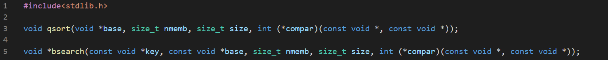

Two powerful functions that operate on the memory are qsort() and bsearch(). Both these function see the memory as a series of bytes. They don't know the type of the memory but works with the help of the function passed as the last argument.

We have to implement the compar() function ourselves.
The qsort() function sorts an array using quicksort algorithm. This function requires the pointer to the array to be sorted (base), the number of elements (nmemb), the size of an element (size), the pointer to the comparator function. The functions should accept two pointers to any two array elements and return zero if they're equal, positive when the first element should precede the second one, and negative otherwise. The qsort() returns nothing.
Now we'll implement this function.


In the cmp() function, we typecast the void pointer to float pointer and then dereference it to get it's values.
Some simple change in the conditional statement will change the order.


But we can shorten the comparator by a simple subtraction.


If we swap v1 and v2, the list will be reversed.
We can also sort a complex structures-


We can sort by name if we change the member selector operator in cmp(). As the sort is faster when the size is smaller, we can optimize the program by sorting the pointers instead of the memory itself. We can sort the memory using more than one criterion.
The bsearch() function search an array of sorted elements using binary search. It requires the pointer to the value being searched (key), the pointer to the array being searched (base), the number of elements (nmemb) and the size of a single element (size), the pointer to the comparator function (compar). The function returns a pointer to the found element or NULL if it doesn't exist.
let's start with a very simple example-


We can also search through structures.